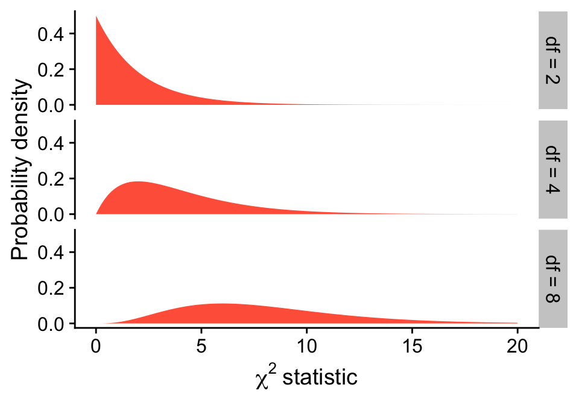
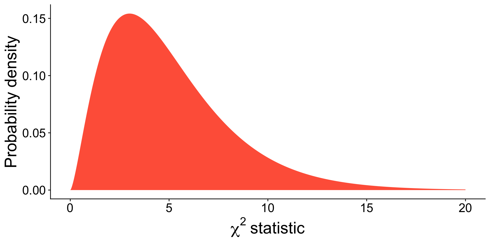
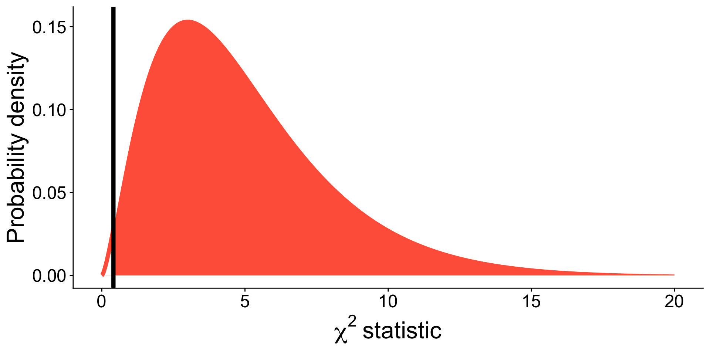
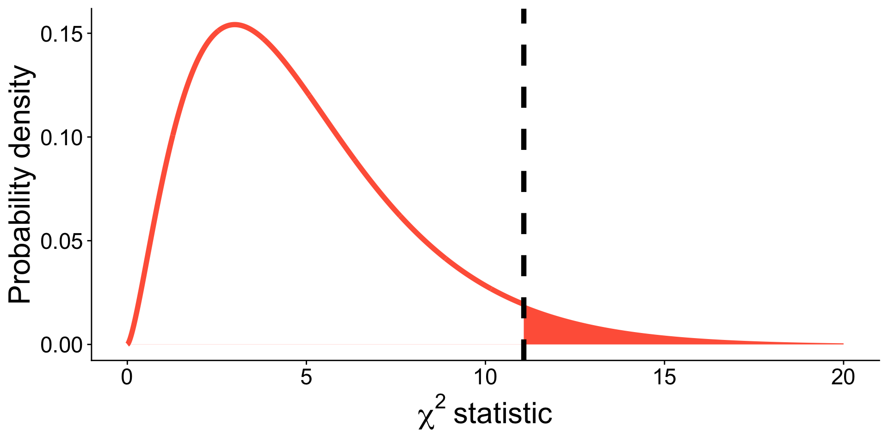
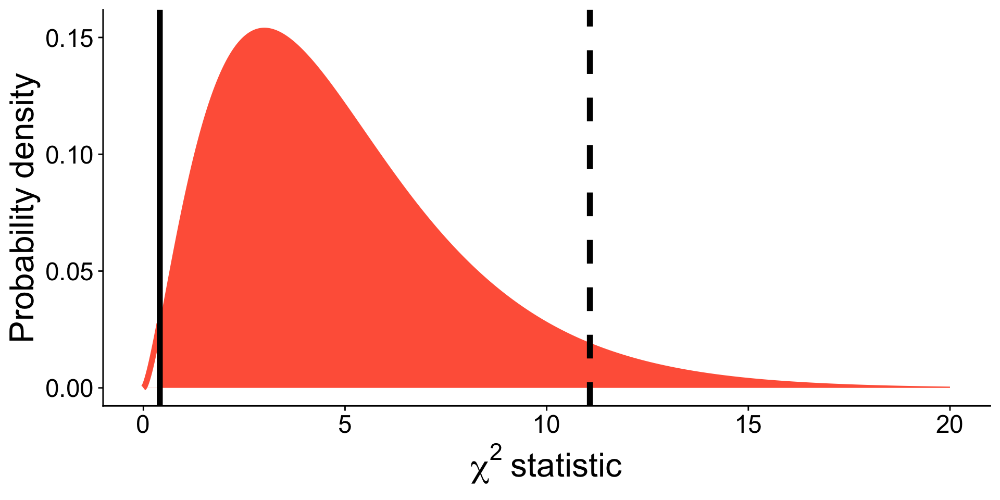
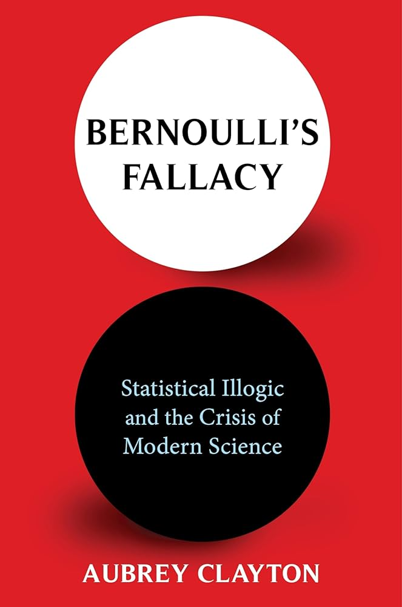

| Color | Proportion | Expected A | Expected B | Expected C |
|---|---|---|---|---|
| Blue | 0.24 | 35 | 24 | 50.4 |
| Orange | 0.20 | 35 | 20 | 42.0 |
| Green | 0.16 | 35 | 16 | 33.6 |
| Yellow | 0.14 | 35 | 14 | 29.4 |
| Red | 0.13 | 35 | 13 | 27.3 |
| Brown | 0.13 | 35 | 13 | 27.3 |
Hypothesis Testing with Frequency Data
Ka hua ʻōlelo o ka lā
kō
Kō, a kupuna crop, going from
diversity and traditional use to…
…exploitation and overthrow
Back to the M&Ms
We talked about the binomial test for the proportion of orange M&Ms…but there are more than just orange and not-orange!
Learning goals
- Analyze a single categorical variable with >2 categories using the \(\chi^2\) goodness-of-fit test
Fast facts
| Binomial test of proportions | \(\chi^2\) goodness-of-fit test | |
|---|---|---|
| Number of variables | 1 | 1 |
| Type of data | categorical (2 categories) | categorical (>2 categories) |
| Parameter | \(p\) | \(\vec{p}\) |
| Estimate | \(\hat{p}\) | \(\vec{\hat{p}}\) |
| Sampling distribution | Binomial distribution | \(\chi^2\) distribution |
| Test statistic | Number of “successes” | \(\chi^2\) statistic |
\(\chi^2\) goodness-of-fit test
The \(\chi^2\) goodness-of-fit test compares frequency data to a probabiity model stated by the null hypothesis
M&M colors
According to Mars Chocolate North America, there are 210 candies in a 7 oz. bag and the proportion of M&M colors are:
| Color | Proportion |
|---|---|
| Blue | 0.24 |
| Orange | 0.20 |
| Green | 0.16 |
| Yellow | 0.14 |
| Red | 0.13 |
| Brown | 0.13 |
Suppose you want to test the hypothesis that the specific bag you have is unusual. What’s a reasonable null hypothesis?
\(H_0\): The frequency of M&Ms with each color in the bag is proportional to their proportion specified by the manufacturer
\(H_\mathrm{A}\): The frequency of M&Ms with each color in the bag is not proportional to their proportion specified by the manufacturer
M&M colors
For a bag with 210 candies, what’s the expected frequency of each color under \(H_0\)? A, B, or C?
M&M colors
The frequency of each color expected under \(H_0\) is the proportion multiplied by the total number (e.g. \(0.24 \times 210 = 50.4\))
| Color | Proportion | Expected |
|---|---|---|
| Blue | 0.24 | 50.4 |
| Orange | 0.20 | 42.0 |
| Green | 0.16 | 33.6 |
| Yellow | 0.14 | 29.4 |
| Red | 0.13 | 27.3 |
| Brown | 0.13 | 27.3 |
| Total | 1 | 210 |
M&M colors
Now, take a random sample
candies <- sample(
x = c("Blue", "Orange", "Green", "Yellow",
"Red", "Brown"),
size = 210,
replace = TRUE,
prob = c(0.24, 0.20, 0.16, 0.14, 0.13, 0.13)
)
table(candies)candies
Blue Brown Green Orange Red Yellow
53 25 34 42 26 30 Think of this random sample as the bag we happen to “observe”
M&M colors
| Color | Proportion | Expected | Observed |
|---|---|---|---|
| Blue | 0.24 | 50.4 | 53 |
| Orange | 0.20 | 42.0 | 42 |
| Green | 0.16 | 33.6 | 34 |
| Yellow | 0.14 | 29.4 | 30 |
| Red | 0.13 | 27.3 | 26 |
| Brown | 0.13 | 27.3 | 25 |
| Total | 1 | 210 | 210 |
- Which color’s observed frequency most deviates from expected?
- Do you think the observations are consistent with the null hypothesis?
M&M colors
| Color | Proportion | Expected | Observed | \(O - E\) | \((O - E)^2/E\) |
|---|---|---|---|---|---|
| Blue | 0.24 | 50.4 | 53 | 2.6 | 0.13 |
| Orange | 0.20 | 42.0 | 42 | 0 | 0 |
| Green | 0.16 | 33.6 | 34 | 0.4 | 0 |
| Yellow | 0.14 | 29.4 | 30 | 0.6 | 0.01 |
| Red | 0.13 | 27.3 | 26 | -1.3 | 0.06 |
| Brown | 0.13 | 27.3 | 25 | -2.3 | 0.19 |
| Total | 1 | 210 | 210 | 0 | 0.41 |
\(\chi^2_i\) measures discrepancy between observed and expected frequency
\(\chi^2_i\) for observation \(i\) is
\[\chi^2_i = \frac{(Observed_i - Expected_i) ^ 2}{\mathit{Expected}_i}\]
Shorter form:
\[\chi^2_i = \frac{(O_i - E_i) ^ 2}{E_i}\]
M&M colors
\[\chi^2_i = \frac{(O_i - E_i) ^ 2}{E_i} = \frac{(53 - 50.4)^2}{50.4} = 0.13\]
| Color | Proportion | Expected | Observed | \(O - E\) | \((O - E)^2/E\) |
|---|---|---|---|---|---|
| Blue | 0.24 | 50.4 | 53 | 2.6 | 0.13 |
| Orange | 0.20 | 42.0 | 42 | 0 | 0 |
| Green | 0.16 | 33.6 | 34 | 0.4 | 0 |
| Yellow | 0.14 | 29.4 | 30 | 0.6 | 0.01 |
| Red | 0.13 | 27.3 | 26 | -1.3 | 0.06 |
| Brown | 0.13 | 27.3 | 25 | -2.3 | 0.19 |
| Total | 1 | 210 | 210 | 0 | 0.41 |
Why \(\frac{(O_i - E_i) ^ 2}{E_i}\)?
Positive and negative discrepancies have same magnitude: \((O_i - E_i) ^ 2\)
Smaller \(E_i\) have larger effect: \(\frac{1}{E_i}\)
| Proportion | Expected | Observed | \((O - E)^2 / E\) |
|---|---|---|---|
| 0.5 | 50 | 40 | 2 |
| 0.2 | 20 | 30 | 5 |
| 0.2 | 20 | 10 | 5 |
| 0.1 | 10 | 20 | 10 |
Null Hypothesis Significance Testing
- State \(H_0\) and \(H_\mathrm{A}\)
- Calculate the test statistic
- Generate the null distribution
- Calculate the \(P\)-value
- Decide:
- Reject \(H_0\) if test statistic is \(\ge\) critical value (\(P \le \alpha\))
- Fail to reject \(H_0\) if test statistic is < critical value (\(P > \alpha\))
\(\chi^2\) statistic
The \(\chi^2\) statistic measures the discrepency between observed frequencies from the data and expected frequencies from the null hypothesis
\(\chi^2\) statistic is the test statistic for the \(\chi^2\) test.
\(\chi^2\) statistic
\(\chi^2\) statistic is calculated by summing up all \(n\) \(\chi^2_i\) values
\[\chi^2 = \sum_{i=1}^n \chi^2_i= \sum_{i=1}^n \frac{(O_i - E_i) ^ 2}{E_i}\]
M&M colors
| Color | Proportion | Expected | Observed | \(O - E\) | \((O - E)^2/E\) |
|---|---|---|---|---|---|
| Blue | 0.24 | 50.4 | 53 | 2.6 | 0.13 |
| Orange | 0.20 | 42.0 | 42 | 0 | 0 |
| Green | 0.16 | 33.6 | 34 | 0.4 | 0 |
| Yellow | 0.14 | 29.4 | 30 | 0.6 | 0.01 |
| Red | 0.13 | 27.3 | 26 | -1.3 | 0.06 |
| Brown | 0.13 | 27.3 | 25 | -2.3 | 0.19 |
| Total | 1 | 210 | 210 | 0 | 0.41 |
What is the test statistic?
M&M colors
| Color | Proportion | Expected | Observed | \(O - E\) | \((O - E)^2/E\) |
|---|---|---|---|---|---|
| Blue | 0.24 | 50.4 | 53 | 2.6 | 0.13 |
| Orange | 0.20 | 42.0 | 42 | 0 | 0 |
| Green | 0.16 | 33.6 | 34 | 0.4 | 0 |
| Yellow | 0.14 | 29.4 | 30 | 0.6 | 0.01 |
| Red | 0.13 | 27.3 | 26 | -1.3 | 0.06 |
| Brown | 0.13 | 27.3 | 25 | -2.3 | 0.19 |
| Total | 1 | 210 | 210 | 0 | 0.41 |
What is the test statistic?
How often would we expect a discrepancy of \(\ge 0.41\) under \(H_0\)?
Null Hypothesis Significance Testing
- State \(H_0\) and \(H_\mathrm{A}\)
- Calculate the test statistic
- Generate the null distribution \(\leftarrow\)
- Calculate the \(P\)-value
- Decide:
- Reject \(H_0\) if test statistic is \(\ge\) critical value (\(P \le \alpha\))
- Fail to reject \(H_0\) if test statistic is < critical value (\(P > \alpha\))
\(\chi^2\) distribution
The \(\chi^2\) distribution is the sampling distribution for \(\chi^2\) test statistic
Assumptions
- None of the categories have an expected frequency of less than 1
- No more than 20% of the categories have expected frequencies less than 5
Checking assumptions
| Color | Proportion | Expected |
|---|---|---|
| Blue | 0.24 | 50.4 |
| Orange | 0.20 | 42.0 |
| Green | 0.16 | 33.6 |
| Yellow | 0.14 | 29.4 |
| Red | 0.13 | 27.3 |
| Brown | 0.13 | 27.3 |
| Total | 1.00 | 210 |
\(\checkmark\) All Expected values > 1
\(\checkmark\) Under 20% of Expected values < 5
Checking assumptions
| Color | Proportion | Expected |
|---|---|---|
| Blue | 0.24 | 9.1 |
| Orange | 0.20 | 7.6 |
| Green | 0.16 | 6.1 |
| Yellow | 0.14 | 5.3 |
| Red | 0.13 | 4.9 |
| Brown | 0.13 | 4.9 |
| Total | 1.00 | 38 |
\(\checkmark\) All Expected values > 1
✗ Under 20% of Expected values < 5
Checking assumptions
| Color | Proportion | Expected |
|---|---|---|
| Blue | 0.24 | 1.7 |
| Orange | 0.20 | 1.4 |
| Green | 0.16 | 1.1 |
| Yellow | 0.14 | 1 |
| Red | 0.13 | 0.9 |
| Brown | 0.13 | 0.9 |
| Total | 1.00 | 7 |
✗ All Expected values > 1
✗ Under 20% of Expected values < 5
\(\chi^2\) distribution
Under the null hypothesis, the more categories, the larger the test statistic
3 categories
\[ \begin{aligned} \chi^2 &= \sum_{i=1}^3 \frac{(O_i - E_i) ^ 2}{E_i} \\ &= \frac{(O_1 - E_1) ^ 2}{E_1} + \frac{(O_2 - E_2) ^ 2}{E_2} + \frac{(O_3 - E_3) ^ 2}{E_3} \end{aligned} \]
6 categories
\[ \begin{aligned} \chi^2 = &\sum_{i=1}^6 \frac{(O_i - E_i) ^ 2}{E_i} \\ = &\frac{(O_1 - E_1) ^ 2}{E_1} + \frac{(O_2 - E_2) ^ 2}{E_2} + \frac{(O_3 - E_3) ^ 2}{E_3} + \\ &\frac{(O_4 - E_4) ^ 2}{E_4} + \frac{(O_5 - E_5) ^ 2}{E_5} + \frac{(O_6 - E_6) ^ 2}{E_6} \end{aligned} \]
Degrees of freedom for \(\chi^2\) distribution
The degrees of freedom of a \(\chi^2\) statistic capture this fact that more categories equates to larger values
\[df = \mathrm{(Number~of~categories)} - 1\]
More degrees of freedom = more likely to have larger values

Degrees of freedom depends on number of categories, not sample size
| Expected | Observed | \(\chi^2_i\) |
|---|---|---|
| 60 | 57 | 0.150 |
| 60 | 62 | 0.067 |
| 60 | 61 | 0.017 |
\[\mathit{df} = 3 - 1 = 2\] \[ \begin{align} \chi^2 &= 0.15+0.067+0.017 \\ &= 0.233 \end{align} \]
| Expected | Observed | \(\chi^2_i\) |
|---|---|---|
| 600 | 570 | 1.500 |
| 600 | 620 | 0.667 |
| 600 | 610 | 0.167 |
\[\mathit{df} = 3 - 1 = 2\] \[ \begin{align} \chi^2 &= 1.5+0.667+0.167 \\ &= 2.333 \end{align} \]
M&M colors
| Color | Proportion | Expected | Observed | \(O - E\) | \((O - E)^2/E\) |
|---|---|---|---|---|---|
| Blue | 0.24 | 50.4 | 53 | 2.6 | 0.13 |
| Orange | 0.20 | 42.0 | 42 | 0 | 0 |
| Green | 0.16 | 33.6 | 34 | 0.4 | 0 |
| Yellow | 0.14 | 29.4 | 30 | 0.6 | 0.01 |
| Red | 0.13 | 27.3 | 26 | -1.3 | 0.06 |
| Brown | 0.13 | 27.3 | 25 | -2.3 | 0.19 |
| Total | 1 | 210 | 210 | 0 | 0.41 |
How many degrees of freedom should we use for these data?
M&M colors
\[df = \mathrm{(Number~of~categories)} - 1 \]
\[\mathit{df} = 6 - 1 = 5\]
\(\chi_5^2\) distribution (graphically)
Read \(\chi_5^2\) as “\(\chi^2\) distribution with \(d.f. = 2\)”

\(\chi_5^2\) distribution with test statistic
Recall we calculated for the M&Ms: \(\chi^2 = 0.41\)

\(\chi_\mathit{df}^2\) distribution
The \(P\)-value is the area to the right of test statistic.
So this is a one-tailed test. Why?
We are only interested if the discrepancy between Expected and Observed is more than we expect under \(H_0\)
\[\frac{(O_i - E_i)^2}{E_i}\]
Higher test statistics = more discrepancy between Expected and Observed
\(\chi_\mathit{df}^2\) distribution
Why is the \(\chi_\mathit{df}^2\) distribution continuous even though we are working with a categorical variable with discrete frequencies?
Because \(\chi_\mathit{df}^2\) is an approximation of the “true” sampling distribution
Null Hypothesis Significance Testing
- State \(H_0\) and \(H_A\)
- Calculate the test statistic
- Generate the null distribution
- Calculate the P-value \(\leftarrow\)
- Decide:
- Reject \(H_0\) if the P-value is less than or equal to \(\alpha\) (\(P \le \alpha\))
- Fail to reject \(H_0\) if P-value is greater than \(\alpha\) (\(P > \alpha\))
\(P\)-value
\(\chi^2~\text{statistic} = 0.4068114\), \(\mathit{df} = 5\)
[1] 0.9951399(Note: if you were alive in the Pleistocene you might look up a P-value value in a table in the back of your stats book)
Decide
- \(\alpha = 0.05\)
- \(P = 1\)
- \(1 > 0.05\)
We fail to reject \(H_0\)
We do not have sufficient evidence to say that the frequency of candy colors differs significantly from what we would expect based on the manufacturer’s information
Null Hypothesis Significance Testing
- State \(H_0\) and \(H_\mathrm{A}\)
- Calculate the test statistic
- Generate the null distribution
- Find the critical value at a specified \(\alpha\)
- Decide:
- Reject \(H_0\) if test statistic is \(\ge\) critical value (same as \(P \le \alpha\))
- Fail to reject \(H_0\) if test statistic is < critical value (same as \(P > \alpha\))
Critical value
A critical value is the value of a test statistic that marks the boundary of a specified area in the tail (or tails) of the sampling distribution under \(H_0\)
Critical value
You can look up critical values in a table if you’re a dinosaur
\(\alpha = 0.05\), \(\mathit{df} = 5\)
\(\chi_5^2\) distribution with critical value
\(\alpha = 0.05\), \(\mathit{df} = 5\)

\(\chi_5^2\) distribution with critical value
\(\alpha = 0.05\), \(\mathit{df} = 5\)

The quick way in R
Summary
The \(\chi^2\) distribution describes the sampling distribution of the discrepancy between expected and observed frequencies
It is an approximate test, but works well when sample size are large that assumptions are met
Break!
Learning Objectives
- Analyze two or more categorical variable with \(\ge 2\) categories using the \(\chi^2\) distribution and contingency analysis
Review of \(\chi^2\) goodness of fit test
| \(\chi^2\) goodness-of-fit test | |
|---|---|
| Number of variables | 1 |
| Type of data | categorical (>2 categories) |
| Parameter | \(\vec{p}\) |
| Estimate | \(\vec{\hat{p}}\) |
| Sampling distribution | \(\chi^2\) distribution |
| Test statistic | \(\chi^2\) statistic |
\(\chi^2\) goodness-of-fit test
The \(\chi^2\) goodness-of-fit test compares frequency data to a probability model stated by the null hypothesis
M&M colors
| Color | Proportion | Expected | Observed | \(O - E\) | \((O - E)^2/E\) |
|---|---|---|---|---|---|
| Blue | 0.24 | 50.4 | 53 | 2.6 | 0.13 |
| Orange | 0.20 | 42.0 | 42 | 0 | 0 |
| Green | 0.16 | 33.6 | 34 | 0.4 | 0 |
| Yellow | 0.14 | 29.4 | 30 | 0.6 | 0.01 |
| Red | 0.13 | 27.3 | 26 | -1.3 | 0.06 |
| Brown | 0.13 | 27.3 | 25 | -2.3 | 0.19 |
| Total | 1 | 210 | 210 | 0 | 0.41 |
\[\chi^2_i = \frac{(Observed_i - Expected_i) ^ 2}{\mathit{Expected}_i}\]
\(\chi^2\) statistic
The \(\chi^2\) statistic measures the discrepency between observed frequencies from the data and expected frequencies from the null hypothesis
\(\chi^2\) statistic is calculated by summing up all \(n\) \(\chi^2_i\) values
\[\chi^2 = \sum_{i=1}^n \chi^2_i= \sum_{i=1}^n \frac{(O_i - E_i) ^ 2}{E_i}\]
it measures discrepancy between observed and expected frequency
M&M colors
| Color | Proportion | Expected | Observed | \(O - E\) | \((O - E)^2/E\) |
|---|---|---|---|---|---|
| Blue | 0.24 | 50.4 | 53 | 2.6 | 0.13 |
| Orange | 0.20 | 42.0 | 42 | 0 | 0 |
| Green | 0.16 | 33.6 | 34 | 0.4 | 0 |
| Yellow | 0.14 | 29.4 | 30 | 0.6 | 0.01 |
| Red | 0.13 | 27.3 | 26 | -1.3 | 0.06 |
| Brown | 0.13 | 27.3 | 25 | -2.3 | 0.19 |
| Total | 1 | 210 | 210 | 0 | 0.41 |
\[\chi^2= \sum_{i=1}^n \frac{(O_i - E_i) ^ 2}{E_i} = 0.41\]
\(H_0\): The frequency of M&Ms with each color in the bag is proportional to their proportion specified by the manufacturer
How often would we expect a discrepancy of \(\ge 0.41\) under \(H_0\)?
Null Hypothesis Significance Testing
- State \(H_0\) and \(H_\mathrm{A}\) \(\checkmark\)
- Calculate the test statistic \(\checkmark\)
- Generate the null distribution \(\leftarrow\)
- Calculate the \(P\)-value
- Decide:
- Reject \(H_0\) if test statistic is \(\ge\) critical value (\(P \le \alpha\))
- Fail to reject \(H_0\) if test statistic is < critical value (\(P > \alpha\))
\(\chi^2\) distribution
The \(\chi^2\) distribution is the sampling distribution for \(\chi^2\) test statistic
Assumptions
- None of the categories have an expected frequency of less than 1
- No more than 20% of the categories have expected frequencies less than 5
\(\chi^2\) distribution
The \(\chi^2\) distribution is the sampling distribution for \(\chi^2\) test statistic
Under the null hypothesis, the more categories, the larger the test statistic
3 categories
\[ \begin{aligned} \chi^2 &= \sum_{i=1}^3 \frac{(O_i - E_i) ^ 2}{E_i} \\ &= \frac{(O_1 - E_1) ^ 2}{E_1} + \frac{(O_2 - E_2) ^ 2}{E_2} + \frac{(O_3 - E_3) ^ 2}{E_3} \end{aligned} \]
6 categories
\[ \begin{aligned} \chi^2 = &\sum_{i=1}^6 \frac{(O_i - E_i) ^ 2}{E_i} \\ = &\frac{(O_1 - E_1) ^ 2}{E_1} + \frac{(O_2 - E_2) ^ 2}{E_2} + \frac{(O_3 - E_3) ^ 2}{E_3} + \\ &\frac{(O_4 - E_4) ^ 2}{E_4} + \frac{(O_5 - E_5) ^ 2}{E_5} + \frac{(O_6 - E_6) ^ 2}{E_6} \end{aligned} \]
Degrees of freedom for \(\chi^2\) distribution
The degrees of freedom of a \(\chi^2\) statistic capture this fact that more categories equates to larger values
\[df = \mathrm{(Number~of~categories)} - 1\]
M&M colors
| Color | Proportion | Expected | Observed | \(O - E\) | \((O - E)^2/E\) |
|---|---|---|---|---|---|
| Blue | 0.24 | 50.4 | 53 | 2.6 | 0.13 |
| Orange | 0.20 | 42.0 | 42 | 0 | 0 |
| Green | 0.16 | 33.6 | 34 | 0.4 | 0 |
| Yellow | 0.14 | 29.4 | 30 | 0.6 | 0.01 |
| Red | 0.13 | 27.3 | 26 | -1.3 | 0.06 |
| Brown | 0.13 | 27.3 | 25 | -2.3 | 0.19 |
| Total | 1 | 210 | 210 | 0 | 0.41 |
\[ \begin{align} df &= \mathrm{(Number~of~categories)} - 1 \\ &= 6 - 1 = 5 \end{align} \]
\(\chi_5^2\) distribution with test statistic
Recall we calculated for the M&Ms: \(\chi^2 = 0.41\)

\(\chi_\mathit{df}^2\) distribution
The \(P\)-value will be the area to the right of test statistic.
So this is a one-tailed test. Why?
We are only interested if the discrepancy between Expected and Observed is more than we expect under \(H_0\)
\[\frac{(O_i - E_i)^2}{E_i}\]
Higher test statistics = more discrepancy between Expected and Observed
\(\chi_\mathit{df}^2\) distribution
Why is the \(\chi_\mathit{df}^2\) distribution continuous even though we are working with a categorical variable with discrete frequencies?
Because \(\chi_\mathit{df}^2\) is an approximation of the “true” sampling distribution
\(P\)-value
\(\chi^2~\text{statistic} = 0.4068114\), \(\mathit{df} = 5\)
[1] 0.9951399Contingency analysis: from 1 variable to 2!
| \(\chi^2\) goodness-of-fit test | Contingency test | |
|---|---|---|
| Number of variables | 1 | 2 |
| Type of data | categorical | categorical |
| Parameter | \(\vec{p}\) | ??? |
| Estimate | \(\vec{\hat{p}}\) | ??? |
| Sampling distribution | \(\chi^2\) distribution | \(\chi^2\) distribution |
| Test statistic | \(\chi^2\) statistic | \(\chi^2\) statistic |
Contingency analysis: from 1 variable to 2!
\(\chi^2\) goodness of fit
| Category | Frequency |
|---|---|
| category 1 | \(O_1\) |
| category 2 | \(O_2\) |
| category 3 | \(O_3\) |
Contingency Analysis
| category A | category B | |
|---|---|---|
| category 1 | \(O_{1A}\) | \(O_{1B}\) |
| category 2 | \(O_{2A}\) | \(O_{2B}\) |
| category 3 | \(O_{3A}\) | \(O_{3B}\) |
Contingency analysis: this is a contigency table
We will put the response variable across rows
We will put the explanatory variable across columns
| category A | category B | |
|---|---|---|
| category 1 | \(O_{1A}\) | \(O_{1B}\) |
| category 2 | \(O_{2A}\) | \(O_{2B}\) |
| category 3 | \(O_{3A}\) | \(O_{3B}\) |
Example: birth outcomes for non-English and English speakers in Hawaiʻi
| non-English speaker | English speaker | |
|---|---|---|
| Primary Caesarean delivery | 127 | 934 |
| Primary vaginal delivery | 1022 | 9336 |
Are non-English speakers more likely to undergo C-section in their first delivery?
data from: Sentell et al. (2016). Maternal language and adverse birth outcomes in a statewide analysis. Women & Health
Example: birth outcomes for non-English and English speakers in Hawaiʻi
Context
C-section can be life saving, but rates have increased due to physician choices, some of which disregard health of parent and baby
Example: birth outcomes for non-English and English speakers in Hawaiʻi
Context: There’s a breakdown in trust, ethics, and real healthcare
Example: birth outcomes for non-English and English speakers in Hawaiʻi
Context: The breakdown intersects with race
Example: birth outcomes for non-English and English speakers in Hawaiʻi
Context: The breakdown intersects with gender identity
Example: birth outcomes for non-English and English speakers in Hawaiʻi
| non-English speaker | English speaker | |
|---|---|---|
| Primary Caesarean delivery | 127 | 934 |
| Primary vaginal delivery | 1022 | 9336 |
Are non-English speakers more likely to undergo C-section in their first delivery?
Null Hypothesis Significance Testing
- State \(H_0\) and \(H_\mathrm{A}\)
- Calculate the test statistic
- Generate the null distribution
- Calculate the \(P\)-value
- Decide:
- Reject \(H_0\) if test statistic is \(\ge\) critical value (\(P \le \alpha\))
- Fail to reject \(H_0\) if test statistic is < critical value (\(P > \alpha\))
Example: birth outcomes for non-English and English speakers in Hawaiʻi
Contingency analysis uses the \(\chi^2\) test statistic, so we need observed and expected frequencies
| non-English \(O\) | non-English \(E\) | English \(O\) | English \(E\) | |
|---|---|---|---|---|
| Primary Caesarean delivery | 127 | ?? | 934 | ?? |
| Primary vaginal delivery | 1022 | ?? | 9336 | ?? |
Example: simpler numbers
Contingency analysis uses the \(\chi^2\) test statistic, so we need observed and expected frequencies
| non-English \(O\) |
non-English \(E\) |
English \(O\) |
English \(E\) |
|
|---|---|---|---|---|
| Primary Caesarean delivery | 1 | ?? | 2 | ?? |
| Primary vaginal delivery | 5 | ?? | 16 | ?? |
| non-English \(O\) |
non-English \(E\) |
English \(O\) |
English \(E\) |
|
|---|---|---|---|---|
| Primary Caesarean delivery | 1 | 1.5 | 2 | 1.5 |
| Primary vaginal delivery | 5 | 10 | 16 | 10 |
| non-English \(O\) |
non-English \(E\) |
English \(O\) |
English \(E\) |
|
|---|---|---|---|---|
| Primary Caesarean delivery | 1 | ?? | 2 | ?? |
| Primary vaginal delivery | 5 | ?? | 16 | ?? |
| non-English \(O\) |
non-English \(E\) |
English \(O\) |
English \(E\) |
Totals |
|
|---|---|---|---|---|---|
| Primary Caesarean delivery | 1 | ?? | 2 | ?? | 3 |
| Primary vaginal delivery | 5 | ?? | 16 | ?? | 21 |
| Totals | 6 | 18 | 24 |
| non-English \(O\) |
non-English \(E\) |
English \(O\) |
English \(E\) |
Totals |
|
|---|---|---|---|---|---|
| Primary Caesarean delivery | 1 | ?? | 2 | ?? | 3 |
| Primary vaginal delivery | 5 | ?? | 16 | ?? | 21 |
| Totals | 6 | 18 | 24 |
| non-English \(O\) |
non-English \(E\) |
English \(O\) |
English \(E\) |
Totals |
|
|---|---|---|---|---|---|
| Primary Caesarean delivery | 1 | \(\frac{3}{4}\) | 2 | \(2 \frac{1}{4}\) | 3 |
| Primary vaginal delivery | 5 | \(5 \frac{1}{4}\) | 16 | \(15 \frac{3}{4}\) | 21 |
| Totals | 6 | 18 | 24 |
What should the expected frequencies be?
Is this right? …No…
Expected frequencies come from the null hypothesis. What is the null hypothesis?
Expected frequencies come from the null hypothesis. \(H_0\): equal proportions across explanatory and response groups
\(\hat{\text{Pr}}(\text{non-English speaker}) = \frac{1}{4}\) and \(\hat{\text{Pr}}(\text{English speaker}) = \frac{3}{4}\)
So expected frequencies assuming equal proportions be
\(E_{\text{C-section, non-English}} = \frac{1}{4} \times 3 = \frac{3}{4}\) \(E_{\text{VB, non-English}} = \frac{1}{4} \times 21 = 5 \frac{1}{4}\)
\(E_{\text{C-section, English}} = \frac{3}{4} \times 3 = 2\frac{1}{4}\) \(E_{\text{VB, English}} = \frac{3}{4} \times 21 = 15 \frac{3}{4}\)
Example: simpler numbers
Test statistic is \(\chi^2 = \sum_{i=1}^n \frac{(O_i - E_i) ^ 2}{E_i}\)
Test statistic is \(\chi^2 = 0.127\)
| non-English \(O\) |
non-English \(E\) |
English \(O\) |
English \(E\) |
|
|---|---|---|---|---|
| Primary Caesarean delivery | 1 | \(\frac{3}{4}\) | 2 | \(2 \frac{1}{4}\) |
| Primary vaginal delivery | 5 | \(5 \frac{1}{4}\) | 16 | \(15 \frac{3}{4}\) |
What about degrees of freedom? For a contingency test d.f. is:
\[ \begin{align} df &= (\text{number of rows} - 1) \times (\text{number of columns} - 1) \\ &= (2 - 1) \times (2 - 1) \\ &= 1 \end{align} \]
Example: simpler numbers
Let’s run our null hypothesis test
\(H_0\): there is no difference in the proportions across explanatory groups
\(H_A\): there is a difference in the proportions across explanatory groups
Example: simpler numbers
Let’s run our null hypothesis test
\(H_0\): there is no difference in the proportions across explanatory groups
\(H_A\): there is a difference in the proportions across explanatory groups
Or can use the built-in chisq.test, but first we have to format the data
Example: simpler numbers
Warning in chisq.test(dat): Chi-squared approximation may be incorrect
Pearson's Chi-squared test with Yates' continuity correction
data: dat
X-squared = 0, df = 1, p-value = 1The Warning is important! It tells us we shouldn’t be using \(\chi^2\) because our sample size is too small
Example: simpler numbers
Sure enough we had an expected frequency less than 1 and half our expected frequencies are under 5
| non-English \(O\) |
non-English \(E\) |
English \(O\) |
English \(E\) |
|
|---|---|---|---|---|
| Primary Caesarean delivery | 1 | \(\frac{3}{4}\) | 2 | \(2 \frac{1}{4}\) |
| Primary vaginal delivery | 5 | \(5 \frac{1}{4}\) | 16 | \(15 \frac{3}{4}\) |
Example: birth outcomes for non-English and English speakers in Hawaiʻi
The real data have sufficient sample size to do a \(\chi^2\) test
| non-English speaker | English speaker | |
|---|---|---|
| Primary Caesarean delivery | 127 | 934 |
| Primary vaginal delivery | 1022 | 9336 |
Example: birth outcomes for non-English and English speakers in Hawaiʻi
\(H_0\): there is no difference in the proportions across explanatory groups
\(H_A\): there is a difference in the proportions across explanatory groups
[,1] [,2]
[1,] 127 934
[2,] 1022 9336
Pearson's Chi-squared test with Yates' continuity correction
data: dat
X-squared = 4.4741, df = 1, p-value = 0.03441We reject the null
Learning Objectives
- Understand odds ratios, their connection to contingency analysis, and their confidence intervals
- Gain appreciation for missuses of \(P\)-values and the partial solution offered by confidence intervals
- Gain appreciation for the role of racism, eugenics, and personal bias (not statistical bias) in foundational statistics
Contingency analysis
| Contingency test | |
|---|---|
| Number of variables | 2 |
| Type of data | categorical |
| Parameter | ??? |
| Estimate | ??? |
| Sampling distribution | \(\chi^2\) distribution |
| Test statistic | \(\chi^2\) statistic |
Contingency analysis
| Contingency test | |
|---|---|
| Number of variables | 2 |
| Type of data | categorical |
| Parameter | Odds ratio (OR) |
| Estimate | \(\widehat{OR}\) |
| Sampling distribution | \(\chi^2\) distribution |
| Test statistic | \(\chi^2\) statistic |
The odds ratio is the fraction of how likely a certain outcome is in one group compared to the other
Odds and odds ratio
Odds describes how likely, e.g., C-section is compared to vaginal birth
\[ \text{Odds(C-section)} = \frac{Pr(\text{C-section})}{Pr(\text{vaginal birth})} \]
If the odds are equal to 1, both outcomes are equally probable
Odds and odds ratio
Odds ratio compares the odds of an outcome, e.g., C-section, across different groups
(note: only works for 2 x 2 contingency tables)
\[ \text{OR} = \frac{\text{Odds(C-section for non-English speakers)}}{\text{Odds(C-section for English speakers)}} \]
If the odds ratio is equal to 1, both groups have the same odds
What is the null hypothesis in terms of the odds ratio?
The null hypothesis is that the odds ratio is equal to 1
Odds and odds ratio
The odds ratio we calculate from data is an estimate \(\widehat{OR}\)
| non-English speaker | English speaker | |
|---|---|---|
| Primary Caesarean delivery | 127 | 934 |
| Primary vaginal delivery | 1022 | 9336 |
| Odds \(\hat{O}\) | 127/1022 | 934/9336 |
\[ \begin{aligned} \widehat{OR} &= \frac{\hat{O}_{nE}}{\hat{O}_{E}} \\ &= \frac{127/1022}{934/9336} \\ &= 1.242 \end{aligned} \]
Odds and odds ratio
The odds ratio we calculate from data is an estimate \(\widehat{OR}\)
| non-English speaker | English speaker | |
|---|---|---|
| Primary Caesarean delivery | 127 | 934 |
| Primary vaginal delivery | 1022 | 9336 |
| Odds \(\hat{O}\) | 127/1022 | 934/9336 |
\[ \begin{aligned} \widehat{OR} &= \frac{\hat{O}_{nE}}{\hat{O}_{E}} \\ &= \frac{127/1022}{934/9336} \\ &= 1.242 \end{aligned} \]
\[ \widehat{OR} = 1.242 \]
\(H_0\): \(OR = 1\). Do we reject the null with \(\widehat{OR} = 1.242\)?
- \(P\)-value from \(\chi^2\) test answers this
- or…
Confidence interval for the odds ratio
The 95% confidence interval:
- is the range of values that contain 95% of the central probability of the sampling distribution for the estimate
- that range will overlap the true population parameter 95% of the time in hypothetical repeat studies
- if the 95% CI does not overlap the null hypothesis (e.g. \(OR = 1\)) we reject the null at \(\alpha = 0.05\)
- confidence intervals give us more information that \(P\)-values alone
Confidence interval for the odds ratio
The 95% CI for the natural log of the odds ratio follows the nice (approximate) rule
\[ \text{95\% CI} = \ln(\widehat{OR}) \pm 2 \times SE_\text{log-scale} \]
An even better approximation is
\[ \text{95\% CI} = \ln(\widehat{OR}) \pm 1.96 \times SE_\text{log-scale} \]
Confidence interval for the odds ratio
\[ \text{95\% CI} = \ln(\widehat{OR}) \pm 1.96 \times SE_\text{log-scale} \]
But what is \(SE_\text{log-scale}\)? Just take my word for it:
| group 1 | group 2 | |
|---|---|---|
| response 1 | a | c |
| response 2 | b | d |
\[ SE_\text{log-scale} = \sqrt{\frac{1}{a} + \frac{1}{b} + \frac{1}{c} + \frac{1}{d}} \]
Confidence interval for the odds ratio
| non-English speaker | English speaker | |
|---|---|---|
| Primary Caesarean delivery | 127 | 934 |
| Primary vaginal delivery | 1022 | 9336 |
\[ \begin{aligned} \text{95\% CI} &= \ln(\widehat{OR}) \pm 1.96 \times SE_\text{log-scale} \\ &= \ln(1.242) \pm 1.96 \times \sqrt{\frac{1}{127} + \frac{1}{1022} + \frac{1}{934} + \frac{1}{9336}} \\ &= \ln(1.242) \pm 1.96 \times 0.100 \\ &= \ln(1.242) \pm 0.196 \end{aligned} \]
Confidence interval for the odds ratio
| non-English speaker | English speaker | |
|---|---|---|
| Primary Caesarean delivery | 127 | 934 |
| Primary vaginal delivery | 1022 | 9336 |
\[ \begin{aligned} \text{95\% CI} &= \ln(\widehat{OR}) \pm 1.96 \times SE_\text{log-scale} \\ &= \ln(1.242) \pm 0.196 \end{aligned} \]
\(\chi^2\) contingency tests are all approximate
Here is a more accurate what of getting all the same information:
# make the contingency table in R
d <- matrix(c(127, 1022, 934, 9336), nrow = 2)
# an "exact" test without the chi-sqrd assumptions
fisher.test(d)
Fisher's Exact Test for Count Data
data: d
p-value = 0.0321
alternative hypothesis: true odds ratio is not equal to 1
95 percent confidence interval:
1.012444 1.514392
sample estimates:
odds ratio
1.242103 Why confidence intervals?
There’s a replication crisis in biostatistics
- Studies will publish a “significant” finding (one with \(P\)-value \(\le 0.05\))
- Other researchers will try to reproduce that finding, and more often than not, they fail 💀
- Are any of our insights valid?!
Blakeley et al. (2019) write about this problem in an article titled:
Abandon Statistical Significance
(i.e. no more \(P\)-values, please)
Why confidence intervals?
There’s a replication crisis in biostatistics
Confidence intervals are a small, simple, incomplete fix: they let us keep doing statistics pretty much the same, but CIs are more informative and thus less prone to P-hacking
Why confidence intervals?
There’s a replication crisis in biostatistics
Confidence intervals are a small, simple, incomplete fix
An example with odds ratios (the null hypothesis is \(OR = 1\))
| \(P\)-value | \(\chi^2\) stat | odds ratio | 95% CI |
|---|---|---|---|
| \(P = 0.01\) | 6.63 | 1.211 | (1.011, 1.425) |
| \(P = 0.01\) | 6.63 | 1.003 | (1.001, 1.004) |
| \(P = 0.01\) | 6.63 | 2.327 | (1.983, 3.782) |
\(P\)-values are all the same, but due to different sample sizes and true effect sizes, odds ratios and confidence intervals are wildly different
How did we get here?
There’s a replication crisis in biostatistics

Aubrey Clayton argues that “political agendas” of early statisticians drove them to develop methods that could prove their own “unpopular” beliefs and shield their “controversial” views behind the guise of “objectivity”
(quotes are not Clayton’s…I’m building suspense…)
How did we get here?
Some early statisticians
Ronald Fisher
- promoted \(P\)-values
- developed that “Fisher exact test” thing
- lots more we’ll be talking about
Karl Pearson
- developed the \(\chi^2\) test
- developed methods for correlation
- lots more we’ll be talking about
| political agendas | = | eugenics |
| “unpopular” beliefs | = | white supremacy |
| “controversial” views | = | genocide is necessary |
Confronting the biostats lineage
Available scientific knowledge provides a firm basis for believing that the groups of mankind differ in their innate capacity for intellectual and emotional development
I am sorry that there should be propaganda in favour of miscegenation [bigoted term for marriage between perceived racial groups] in North America as I am sure it can do nothing but harm
Ronald Fisher: racist, eugenicist, pawn of big tobacco
Confronting the biostats lineage
Unfortunately, considerable propaganda is now being developed to convince the public that cigarette smoking is dangerous
[Fisher was funded by the tobacco industry]
Ronald Fisher: racist, eugenicist, pawn of big tobacco
Confronting the biostats lineage
Karl Pearson: racist, eugenicist, antisemite
My view—and I think it may be called the scientific view of a nation—is that of an organized whole, kept up to a high pitch of internal efficiency by insuring that its numbers are substantially recruited from the better stocks, and kept up to a high pitch of external efficiency by contest, chiefly by way of war with inferior races
It is a false view of human solidarity, a weak humanitarianism, not a true humanism, which regrets that a capable and stalwart race of white men should replace a dark-skinned tribe…”
Confronting the biostats lineage
Karl Pearson: racist, eugenicist, antisemite
It is a false view of human solidarity, a weak humanitarianism, not a true humanism, which regrets that a capable and stalwart race of white men should replace a dark-skinned tribe which can neither utilize its land for the full benefit of mankind, nor contribute its quota to the common stock of human knowledge.
Taken on the average, and regarding both sexes, this alien Jewish population is somewhat inferior physically and mentally to the native population
Confronting the biostats lineage
What do we do? Why learn “statistics”?
- Why learn statistics?
- It holds a powerful position in science and society
- Having statistics as a tool can help you do good rather than harm
- Methods (even \(P\)-values) are not wrong, just wrongly applied
- Those f@&!ers were NOT geniuses, others would have developed similar ideas and did (e.g. Anil Kumar Gain)
- Use statistics for good
- Confront the history
- Remove its influence on the contemporary
- Be intentional and self-reflective about your research
Confronting the biostats lineage
What do we do? Why learn “statistics”?
- Seek and embrace alternative knowledge systems
- Reject the idea that western science is a superior knowledge system
- Do not be extractive in connection to other knowledge systems
- Check out Ethnomathematics here at UH
- Let’s see if we can decolonize statistics